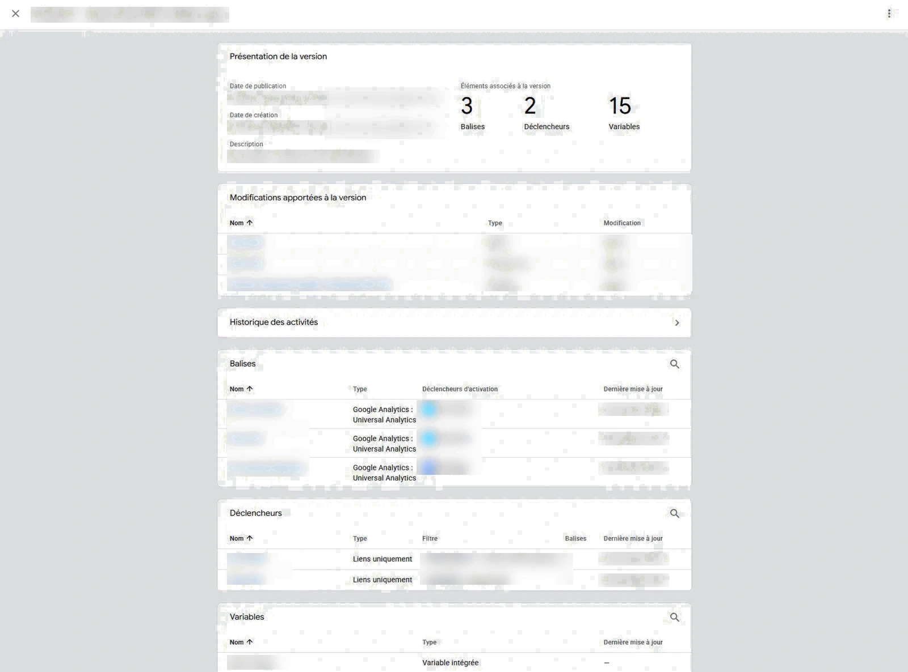
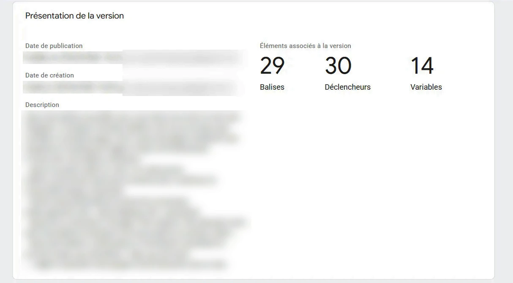
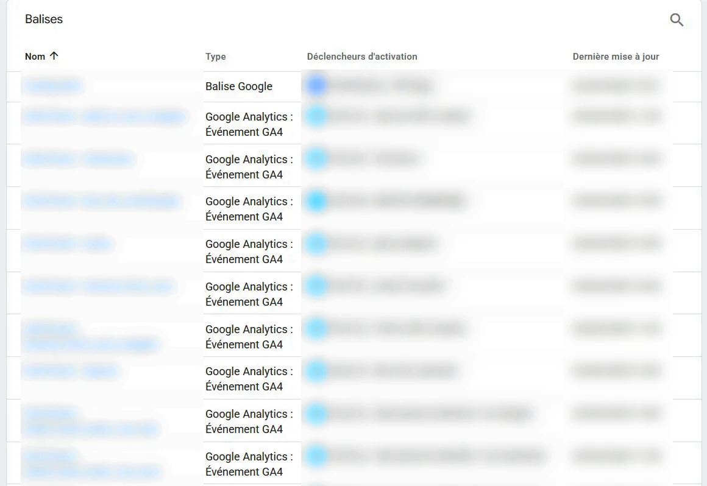
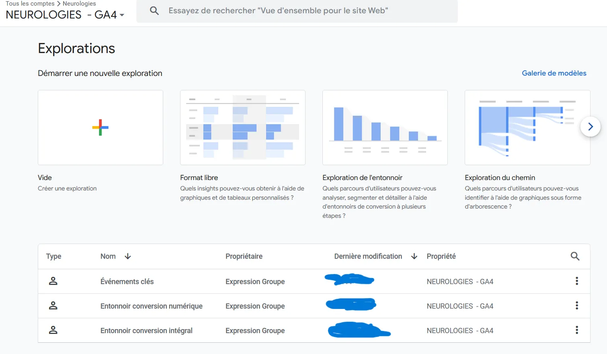
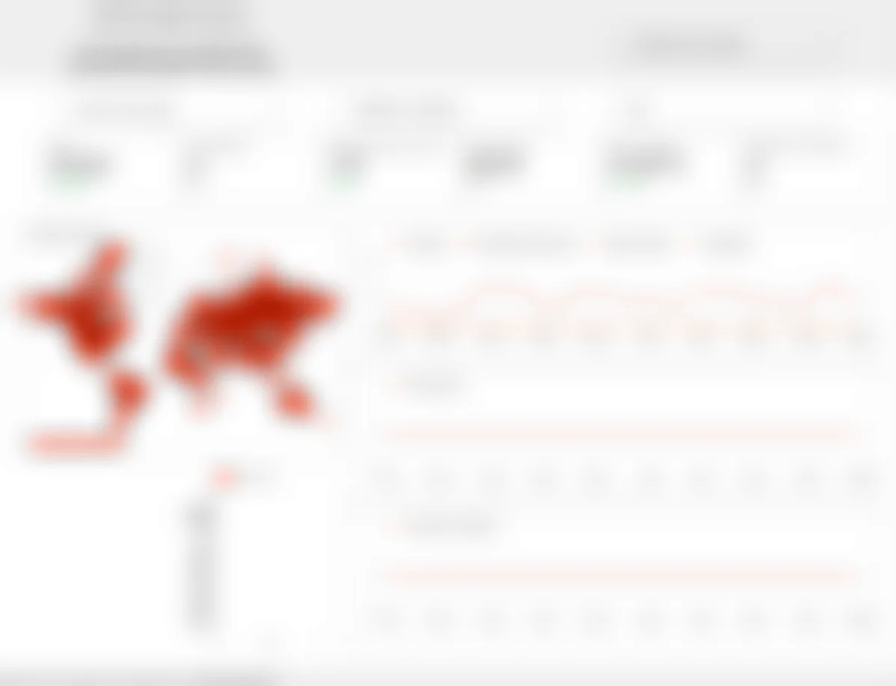
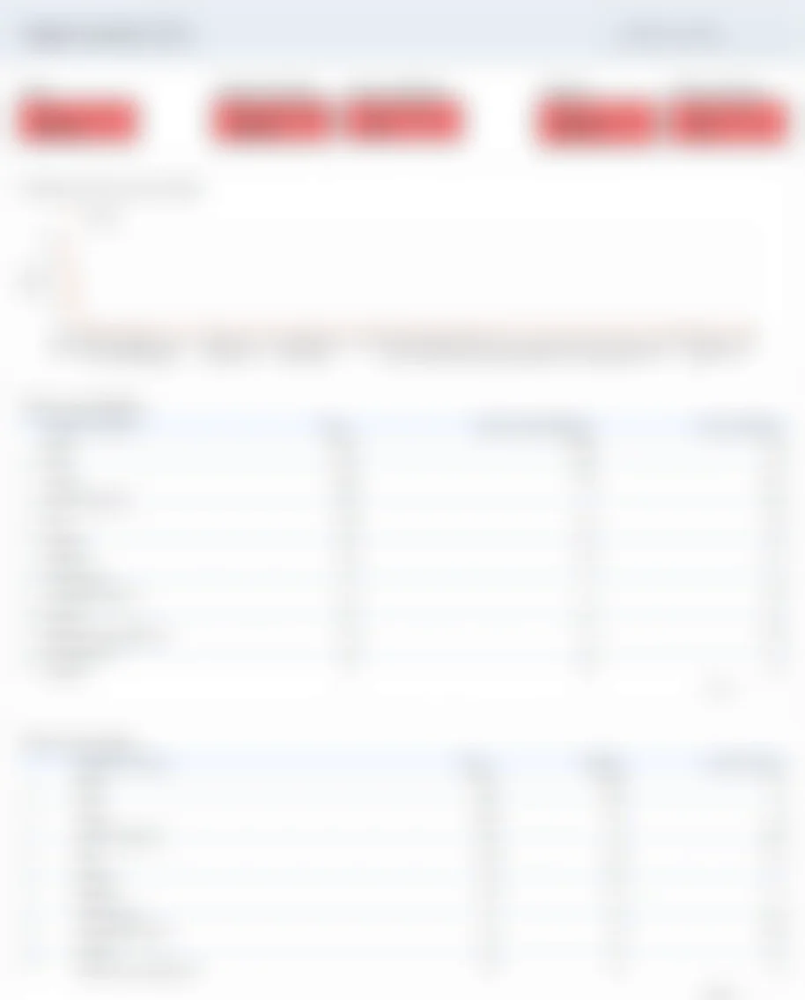

Tim Agoune
Tim Agoune01Objectif
Mettre en place le suivi des données des sites de l'entreprise afin de savoir d'où vient l'audience et ce qu'elle fait sur le site.
02Démarche
Sur le site de Neurologies, j'ai repris entièrement le plan de marquage dans Google Tag Manager : la dernière mise à jour datait de plusieurs années et le conteneur ne comptait que 3 balises devenues obsolètes. J'en ai implanté 29, avec 30 déclencheurs et 14 variables : ajout au panier, tunnel d'achat, abonnements par profil, inscriptions newsletter, recherche interne. Chaque événement remonte ensuite dans GA4, où j'ai créé des rapports personnalisés et des tableaux de bord Looker Studio.
Ce suivi permet aujourd'hui de répondre à des questions précises : d'où vient l'audience, quelles pages retiennent les visiteurs, à quelle étape le tunnel d'achat perd des utilisateurs. Ces données servent de base aux décisions concernant les prochaines améliorations du site internet.






03Moyens et outils
- Google Tag Manager : plan de marquage, balises, déclencheurs, variables ;
- Google Analytics 4 : explorations, comparaisons de périodes, événements clés ;
- Looker Studio pour les tableaux de bord ;
- Google Search Console : requêtes, CTR, positions.